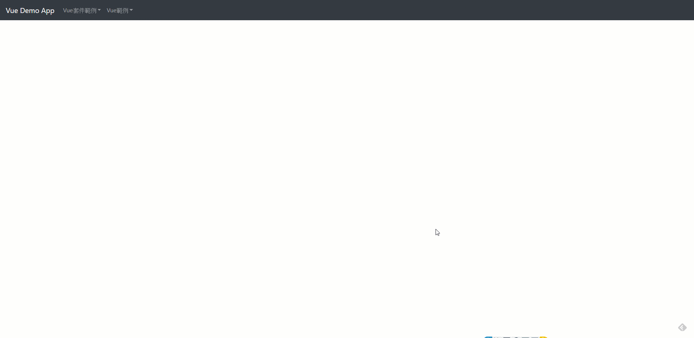

Vue套件介紹：vee-validate
前提情要
Vue.js專案開發，一般應用程式都會遇到表單送出功能，然而前後端分離架構下，前後端必須採用不同階段的驗證，筆者認為基本的資料驗證必須得在前端完成，後端API接收到的資料，應該只剩資料重複性檢查等複雜驗證，這才是筆者認為的健康的資料流。Vue.js驗證相關套件中，筆者選擇vee-validate，此篇就以該套件說明使用方式。
內容
安裝
12npm install vee-validate --saveyarn add vee-validate載入使用
12345//接定義於main.js中//載入import VeeValidate from 'vee-validate';//使用Vue.use(VeeValidate);基本用法
在表單中的input設定驗證屬性
1234<!-- name屬性一定要設定 --><input v-validate="'required'" name="myinput" type="text"><!-- 顯示錯誤訊息-與name屬性設定名稱需一致 --><span>{{ errors.first('myinput') }}</span>表單送出事件中驗證
12345678910// submit method做驗證submitProcess: function() {this.$validator.validateAll().then(result => {if (result) {//驗證成功區塊-可以實作呼叫APIreturn;}//驗證失敗顯示資訊});}
以上基本用法的實際應用，跟著筆者做一個登入頁面感受一下吧。筆者會持續更新之前使用的VueDemo專案，連結於此
https://github.com/EugeneSu0515/VueDemoApp.git
安裝步驟就省略掉了，參考上方安裝方法，接下來實作其他步驟：
加一個Validation Component，template區塊中宣告
1234567891011121314151617181920212223242526<!-- 有兩個欄位-帳號及密碼，並且驗證為必填，放一個登入按鈕，並且執行「submitProcess」method --><form><div class="form-group"><label for="userId">UserId</label><input type="text"class="form-control"id="userId"name="userId"v-validate="'required'"><div class="invalid-feedback"style="display:block;">{{ errors.first('userId') }}</div></div><div class="form-group"><label for="password">Password</label><input type="text"class="form-control"id="password"name="password"v-validate="'required'"><div class="invalid-feedback"style="display:block;">{{ errors.first('password') }}</div></div><button class="btn btn-primary"@click.prevent="submitProcess()">登入</button></form>同樣是Validation Component的script區塊中宣告
12345678910111213141516171819// Vue的methods option中加入「submitProcess」methodexport default {name: "Validation",data() {return {};},methods: {submitProcess: function() {this.$validator.validateAll().then(result => {if (result) {//可以實作呼叫APIalert("Form Submitted!");return;}alert("Correct them errors!");});}}};為了美化版面，適當的加入其他版面配置語法，Validation Component完整語法
1234567891011121314151617181920212223242526272829303132333435363738394041424344454647484950515253545556575859606162636465<template><div id="validation"><!-- 採用`justify-content-center`的配置，讓區塊置中 --><div class="row justify-content-center"><div class="col-4"><!-- 採用`cards`的配置 --><div class="card"><div class="card-header"><h3 class="card-title">登入</h3></div><div class="card-body"><form><div class="form-group"><label for="userId">UserId</label><input type="text"class="form-control"id="userId"name="userId"v-validate="'required'"><div class="invalid-feedback"style="display:block;">{{ errors.first('userId') }}</div></div><div class="form-group"><label for="password">Password</label><input type="text"class="form-control"id="password"name="password"v-validate="'required'"><div class="invalid-feedback"style="display:block;">{{ errors.first('password') }}</div></div><button class="btn btn-primary"@click.prevent="submitProcess()">登入</button></form></div></div></div></div></div></template><script>export default {name: "Validation",data() {return {};},methods: {submitProcess: function() {this.$validator.validateAll().then(result => {if (result) {//可以實作呼叫APIalert("Form Submitted!");return;}alert("Correct them errors!");});}}};</script>擴充
router，router/index.js增加連到ValidationComponent的連結1234567import Validation from '@/components/Validation'// routes陣列中增加{path: 'validation',name: 'ValidationDemo',component: Validation}改造
navbar裡的Menu12<!-- 加一條`router-link`，連到上面設定的`route path` --><router-link :to="{ path: '/validation' }" class="dropdown-item">vee-validate</router-link>實際效果
[ValidationDemo]
結論
以上，簡單的套用validation效果，我覺得vee-validate已經算很容易套用，下一篇會介紹其屬性使用及進階應用，這篇就到這邊，詳細code請參考https://github.com/EugeneSu0515/VueDemoApp.git